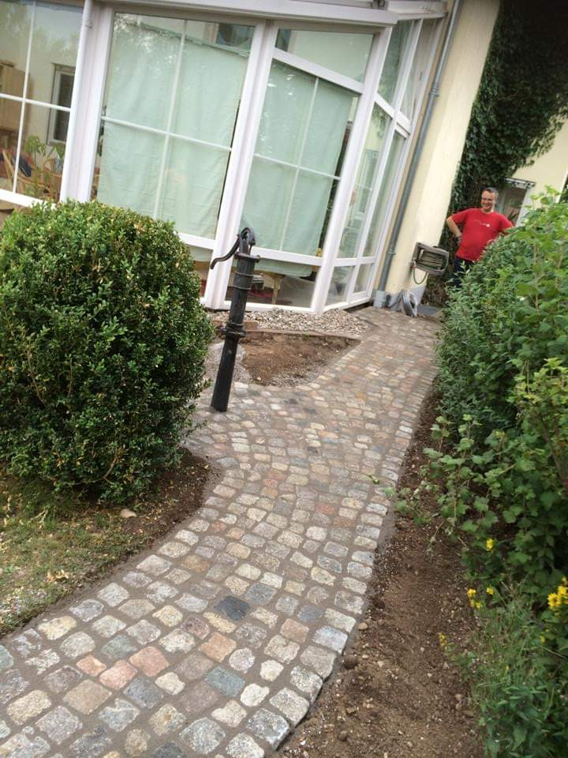
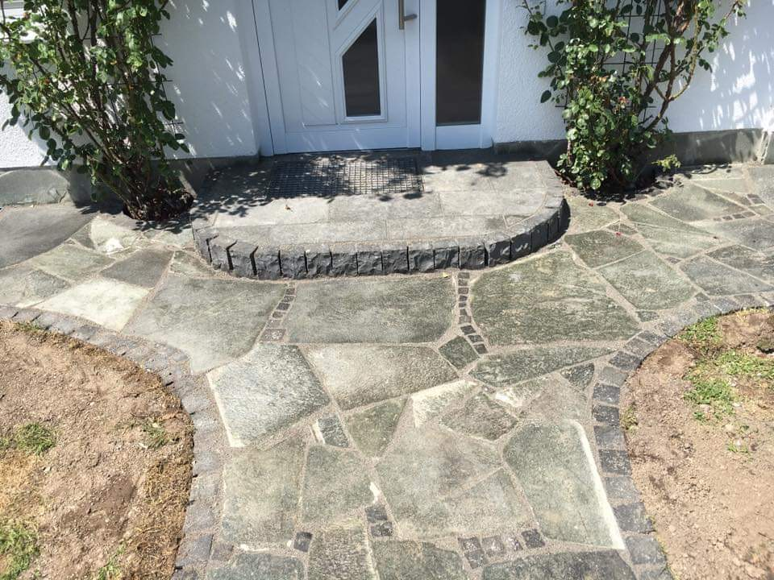

Damit der Garten fertig wird.
Nach Pflaster und Mauer kommt das Grün. Wir pflanzen Bäume, setzen Zäune und säen Rasen. So bekommen Sie den Garten komplett aus einer Hand.

Ein Team vom Aushub bis zum Rasen.
Viele Gärten bleiben halb fertig, weil für jede Arbeit ein anderer Betrieb kommen muss. Bei uns machen dieselben Leute weiter, die vorher gepflastert haben.
Sie haben einen Ansprechpartner für alles, von der ersten Baggerschaufel bis zum letzten Rasensamen.
- Bäume und Sträucher pflanzen
- Beete einfassen
- Zäune setzen
- Rasen säen
Drei Arbeiten, die den Garten fertig machen.
Bäume pflanzen
Ein Baum braucht ein Pflanzloch, das größer ist als sein Ballen, gute Erde und einen Pfahl, bis er fest steht. Mitten im Pflaster bekommt er eine Baumscheibe, damit Wasser an die Wurzeln kommt.
Zäune setzen
Ob Sichtschutz zur Straße oder Grenze zum Nachbarn. Die Pfosten stehen in Fundamenten, damit der Zaun auch nach Jahren gerade bleibt.
Rasen säen
Vor der Aussaat wird der Boden gelockert, eingeebnet und von Steinen befreit. Dann wird gesät und angewalzt. Ein ebener Untergrund ist die halbe Miete.

Der Übergang macht den Unterschied.
Wo Rasen an einen Weg stößt, sollte die Kante sauber sein. Dann lässt sich bequem mähen, und nichts wächst in die Fugen.
Weil wir Pflaster und Grün aus einer Hand machen, planen wir solche Übergänge von Anfang an mit.
Wo Stein und Garten sich treffen.



Fragen zu Pflanzen, Zaun und Rasen.
Welche Pflanzen passen in meinen Garten?
Das hängt von Lage, Sonne und Boden ab. Herr Sopa schaut sich das beim kostenlosen Termin vor Ort an und bespricht mit Ihnen, was passt.
Wann ist die beste Zeit, Rasen zu säen?
Rasen keimt am besten bei milden Temperaturen und feuchtem Boden, also im Frühjahr oder im Spätsommer. Im Allgäu hängt das stark vom Wetter ab.
Was passiert mit Aushub und altem Material?
Darum kümmern wir uns. Erde, Steine und alter Belag werden abgefahren und entsorgt.
Bekomme ich vorher einen Preis?
Ja. Nach dem Termin vor Ort bekommen Sie einen schriftlichen Kostenvoranschlag. Gebaut und gepflanzt wird erst, wenn Sie zugestimmt haben.
Das machen wir auch.
Vom Aushub bis zum letzten Stein. Sie haben einen Ansprechpartner für alles.


Erzählen Sie uns von Ihrem Projekt.
Am schnellsten geht es am Telefon. Oder Sie planen Ihr Projekt in einer Minute, und Herr Sopa meldet sich bei Ihnen.